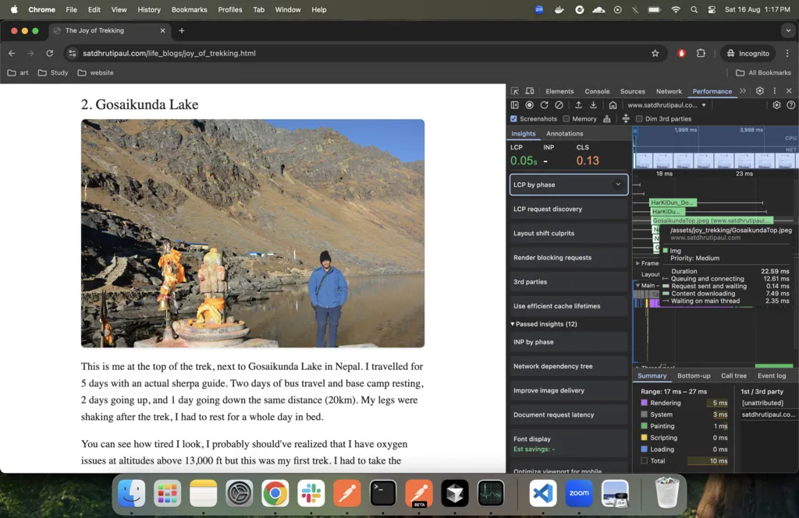
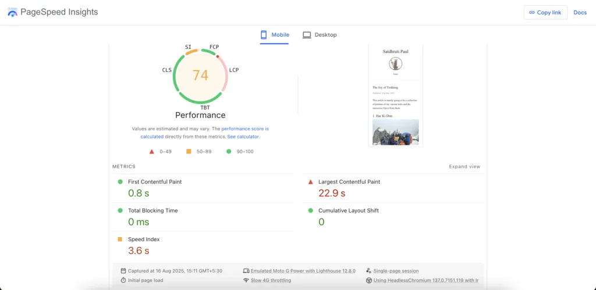
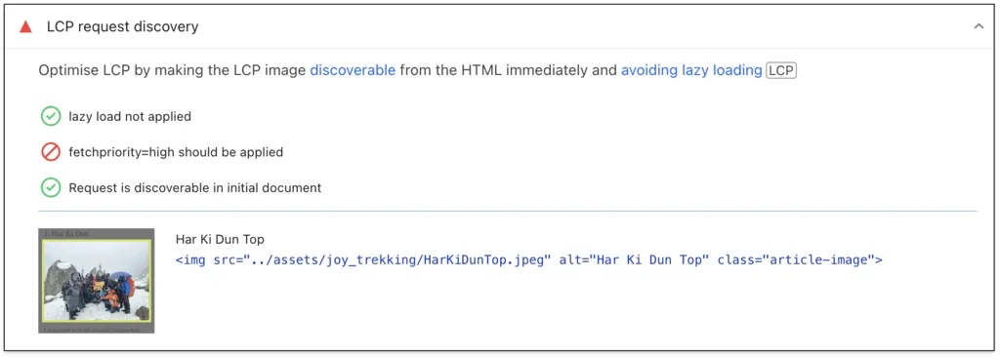
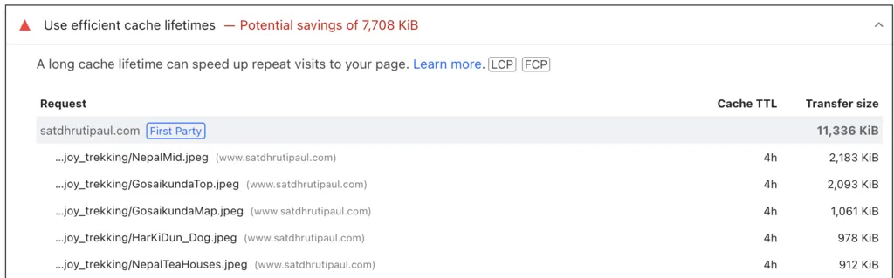
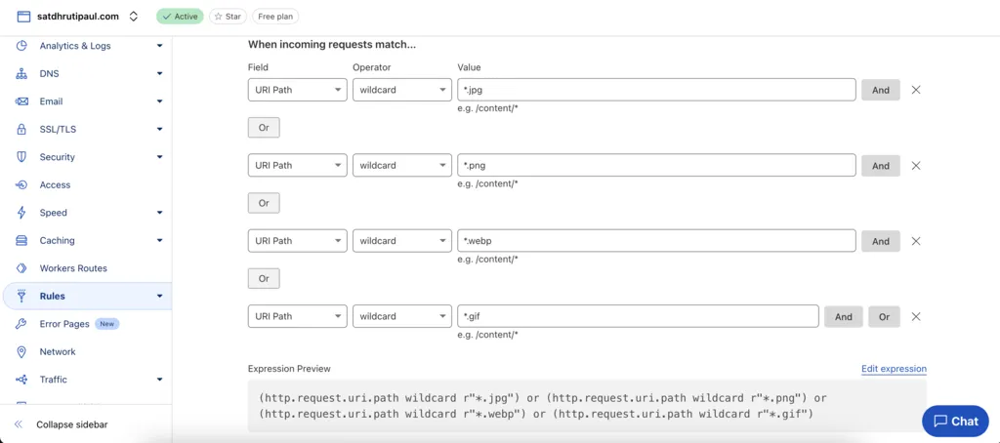
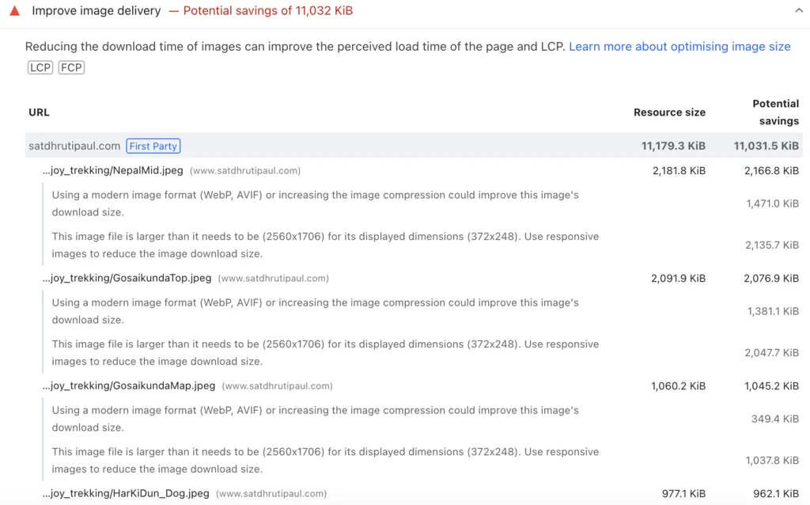

This website is a very simple setup, some HTML, client-side JS logic, and CSS, hosted on Github Pages, and a domain from Cloudflare for $10 a year. The only issue is that there are too many images and memes with good quality that I want to keep here.
How do I optimize this? This begs the question, why do you want to optimize this? Did you notice performance issues? How do you check performance? Thankfully, there are tools for this.
1. Google Inspect -> Performance Tab
2. PageSpeed Insights (Link)
Why does the image download in 7.49ms when seen in Google Performance insights but it's showing metrics in the range of seconds in PageSpeed Insights? This is because performance insight is using my local internet speed of 200+Mbps, but PageSpeed is simulating Slow 4G Throttling speeds around 1Mbps.
3. Suggestions I will be de-prioritizing
- srcset attributes in img tag for multiple images corresponding to multiple screen sizes - I don't want to keep multiple files for a single image.
- loading="lazy" - Both the above tools are against this for the first image in the page (as it needs high fetch priority), I will consider this for the other images down the page later.
- There was also another LCP issue due to a cloudflare script running before the rendering, a "cloudflare-static/email-decode.min.js" script, leading to around 100-150ms delay, but I will not be disabling this else my email will be visible in the source code and will get spammed.
Phase 1. PageSpeed Insights Analysis
Let's start with the simple ones first, and then we'll move on to the more complicated ones.
1. LCP Request Discovery
What is LCP? It stands for Largest Contentful Paint. What it actually means is when you open up a website, what is the time it takes to see the largest image in the initial area that you can see. In my case it would be the first image in the page.
I will be adding fetchpriority="high" according to the suggestion.
2. Use Efficient Cache Lifetimes
You might be thinking, "Hey, 4 hours caching seems pretty good?", but no, Chrome Dev Blog recommends a TTL of 1 year for static images that are not expected to change often. While there is a risk of users not seeing updated images, I won't be updating the images once I've posted a blog, so it's all good for my scenario.
I will be setting Edge Cache TTL to 1 year and Browser Cache TTL to 1 year, according to the dev blog, via Caching Rules in Cloudflare (can be saved as a draft rule and not enabled).
3. Improve Image Delivery
Some of the things I can see at first glance are:
- NepalMid.jpeg has a file size of 2.2MB.
- The file dimensions are 2560x1706 but the displayed dimensions on phone is 372x248 and on desktop is 650x433.
- I can change the image from jpeg to webp format.
Phase 2. Image Compression
The goal for this phase will be to get a bash command that can resize the image, and convert to webp, so that I can use this on all new images/image_folders.

We will only be using one tool for this.
Imagemagick - For resizing and converting to webp. The below command essentially resizes large images into 1024x683 size and converts to webp with 80% quality, while maintaining aspect ratio. We are not converting to 650x433 directly as there is too much data loss (from experimentation), so this is the halfway point for my project.
brew install imagemagick
magick NepalMid.jpeg -resize 1024x683 -quality 80 NepalMidNew.webpThis results in reduction from 2.2MB to 200KB.
VirtuBox - img-optimize repository - Not used.
img-optimize --all --path ./folder_nameI had planned on combining this with Imagemagick but there is no effect on the final size, i.e, initial_image + magick + img-optimize = initial_image + magick.
There could be scope of improvement here, considering this youtube video by Chris Titus.
Then the final script that comes out is:
for file in *.jpeg *.png *.JPG *.JPEG *.PNG; do
[ -e "$file" ] || continue
magick "$file" -resize 1024x683 -quality 80 "$(basename "${file%.*}").webp" && rm "$file"
doneRun this in the folder with your images to create new webp images and delete old heavier images (remove unnecessary formats from script as needed).